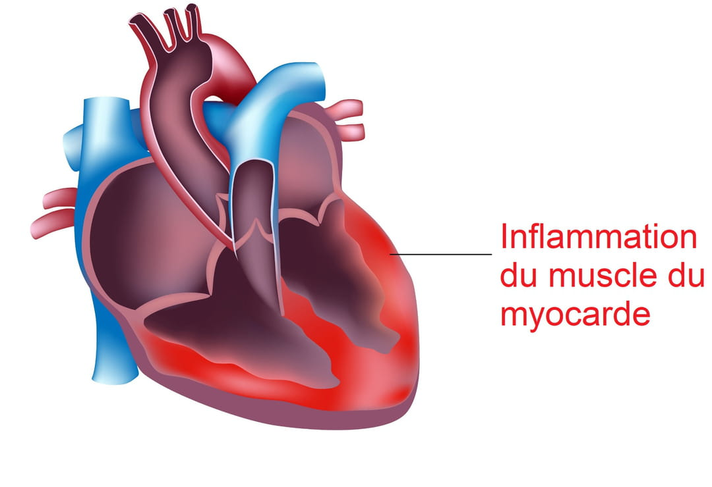
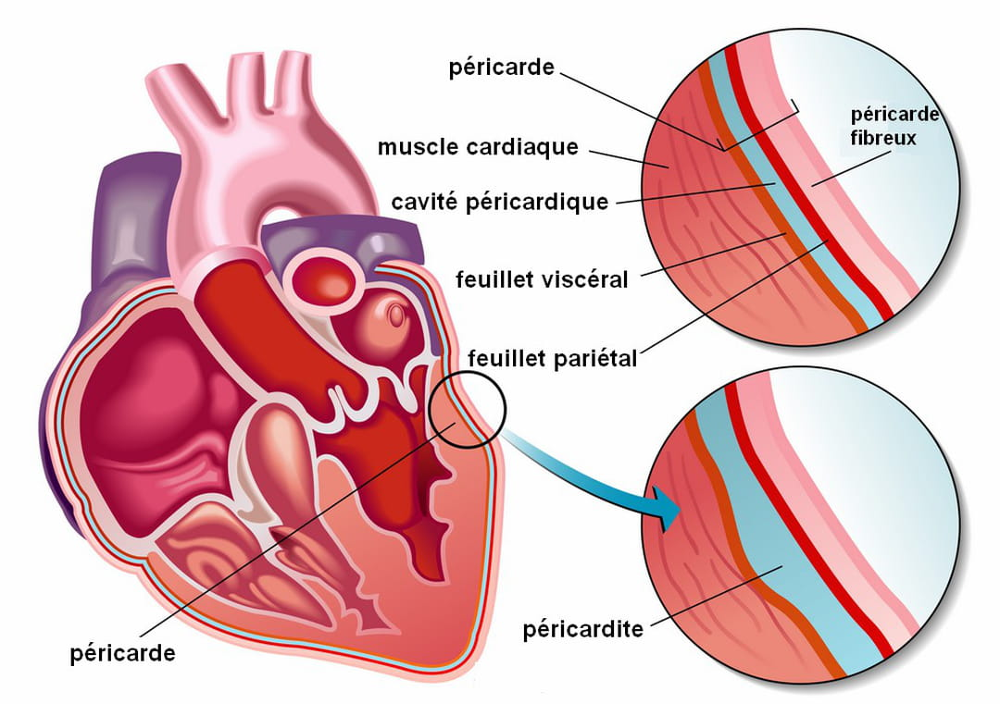

Myocardite
Definition
La myocardite est une inflammation du myocarde, le plus souvent causée par l'infection du myocarde par un virus. Le myocarde forme la masse principale du cœur. C'est un muscle strié, épais et creux capable de se contracter de manière rythmique et involontaire. En se contractant, le myocarde permet au sang de circuler dans les vaisseaux sanguins et de nourrir les différents organes du corps. L'inflammation du myocarde causée par un virus entraîne la destruction des cellules composant le myocarde et diminue ainsi sa capacité de contraction et sa capacité à fournir un apport en sang. Progressivement, le cœur n'est donc plus capable de pomper du sang. L'inflammation peut s'étendre à tout le muscle cardiaque ou se limiter à une ou quelques zones. Dans ce cas, les symptômes seront bénins et la prise en charge rapide et adaptée pourra permettre une guérison. En revanche, une inflammation étendue dans tout le cœur peut entraîner une insuffisance cardiaque importante, de graves troubles du rythmes cardiaques et parfois une mort subite.

Quels sont les symptômes et signes d'une myocardite ?
L'ANSM recommande aux personnes recevant les vaccins Covid de contacter immédiatement un médecin si des symptômes suggérant une myocardite surviennent. Ces symptômes incluent un essoufflement, des palpitations (battements cardiaques forts, parfois irréguliers), et une douleur dans la poitrine.
Symptômes après la vaccination Covid
L'ANSM recommande à toute personne vaccinée contre le Covid présentant des symptômes tels qu'un essoufflement (dyspnée), des douleurs dans la poitrine, des palpitations (battements cardiaques forts,) ou un rythme cardiaque irrégulier de consulter rapidement un médecin.
Premiers symptômes d'une myocardite
Les signes cliniques d'une myocardite sont de nature et de gravité variables, et ne sont pas forcément spécifiques à cette pathologie. Dans les formes les moins sévères, la personne ne ressent aucun symptôme. Certaines inflammations du myocarde peuvent en revanche se caractériser par des symptômes ressemblant à ceux de la grippe :
- fièvre
- maux de tête
- courbatures et douleurs au niveau des articulations
- grande fatigue
- diarrhées
- maux de gorge...
Quelles sont les causes d'une myocardite ?
Dans la très grande majorité des cas, la myocardite est causée par une infection virale qui attaque les cellules du muscle cardiaque. Ce sont généralement les virus de la famille des Coxsackievirus ou des Adenovirus qui sont responsables d'une myocardite. Elle peut également être associée à une autre pathologie bactérienne comme la maladie de Lyme, la Bartonellose ou la diphtérie. Dans de rares cas, elle peut résulter d'une réaction toxique suite à la prise d'un médicament, de substances comme l'alcool, la cocaïne, le plomb, l'arsenic ou encore suite à une morsure de serpent ou de scorpion. Dans ce cas, la myocardite est appelée "myocardite d'hypersensibilité". Dans de très rares cas, la myocardite peut survenir après certaines chimiothérapies, radiothérapies ou électrocutions.
Quel est le traitement d'une myocardite ?
Le traitement d'une myocardite virale repose sur la prise en charge des symptômes, par le biais de médicaments (des antiviraux par exemple), associés à une surveillance étroite du patient et à une mise au repos. Le traitement de l'insuffisance cardiaque inclut des diurétiques et des nitrates pour soulager les symptômes. En parallèle, il est recommandé d'éviter les efforts importants et de restreindre la consommation d'alcool et de tabac.
Une guérison est-elle possible et quels risques de séquelles ?
La guérison et la récupération des fonctions cardiaques interviennent généralement après plusieurs mois. Il existe un risque de séquelles à long terme, dont le pronostic ne peut être donné qu'au cas par cas. Dans les cas de défaillance cardiaque les plus sévères, une transplantation peut se révéler nécessaire.
Péricardite
Definition
La péricardite est une inflammation du péricarde, la membrane qui enveloppe le cœur et qui se compose de deux feuillets (péricarde fibreux et péricarde séreux (composé d'un feuillet pariétal et un feuillet viscéral)) qui délimitent en son sein une cavité habituellement vide. Un liquide lubrifiant se trouve entre les deux feuillets, leur permettant de glisser l'un sur l'autre sans frottement. Toutefois, l'inflammation du péricarde cause de l'irritation, de la tuméfaction (enflure) et de la douleur. La cavité peut être remplie de liquide, on parle de péricardite avec épanchement, en opposition à la péricardite sèche quand il n'y a pas de liquide e n'est pas le cas. Certains types de péricardite peuvent survenir d'un coup et durer peu de temps (péricardite aiguë) alors que d'autres progressent lentement et durent longtemps (chronique). Très souvent sa cause demeure inconnue. On parle alors de péricardite idiopathique, mais celle-ci résulte souvent d'une infection causée par un virus.

Quelles sont les causes?
La péricardite aiguë peut être due à une infection, virale le plus souvent, ou bactérienne. Dans certains cas, elle apparaît dans le cadre de l'évolution d'un cancer, ou elle peut être la conséquence d'un infarctus, ou d'une maladie comme la tuberculose par exemple. On parle de péricardite chronique quand elle dure plus de 3 mois et exerce une résistance à la bonne activité du cœur, d'où son appellation de péricardite constrictive.
Quels sont les symptômes ?
Suite aux cas de péricardite constatés chez des personnes vaccinées contre le Covid, l'ANSM a recommandé à toute personne présentant des symptômes tels qu'un essoufflement (dyspnée), des douleurs dans la poitrine, des palpitations (battements cardiaques forts,) ou un rythme cardiaque irrégulier de consulter rapidement un médecin.
Quels sont les traitements ?
La péricardite peut être d'origine virale ou infectieuse. Dans ce cas il s'agit d'une infection bénigne qui se résorbe naturellement et sans séquelle, la plupart du temps après plusieurs semaines de repos, associées à la prise d'anti-inflammatoires comme par exemple de l'acide acétylsalicylique. D'autres formes plus sérieuses de péricardite nécessitent parfois une intervention chirurgicale en urgence, notamment en cas de péricardite avec un épanchement purulent. Si un cancer ou une autre maladie identifiée est en cause, leur traitement est indispensable. Plus rarement, le péricarde peut être atteint par une inflammation chronique qui peut provoquer une accumulation de liquide ou un épaississement du péricarde, surtout en cas de tuberculose, d'intervention chirurgicale sur le cœur ou après une radiothérapie. Il se calcifie alors et comprime progressivement le cœur. Cette péricardite dite "constrictive" nécessite parfois une intervention chirurgicale avec un retrait du péricarde.
La péricardite est-elle mortelle ?
La péricardite peut être mortelle dans les cas où elle se complique d'une tamponnade cardiaque (à cause d'une quantité excessive de liquide) ou d'une infection généralisée (sepsis). Elle peut aussi mettre en jeu le pronostic vital chez les personnes souffrant d'une maladie cardiaque ou d'un mauvais état de santé.
AVC
Définition
C'est quoi un accident vasculaire cérébral ?
Un accident vasculaire cérébral est provoqué par l'obturation d'un vaisseau sanguin dans le cerveau à cause d'un caillot de sang ou par la rupture d'un vaisseau sanguin à l'intérieur du cerveau entraînant une hémorragie.
AVC ischémique
L'accident vasculaire ischémique, ou infarctus cérébral, représente plus de 80 % des accidents vasculaires cérébraux. Un AVC ischémique est provoqué par l'interruption de la circulation sanguine cérébrale dans le cerveau par un caillot. Soit le caillot se forme localement dans le cerveau, soit il provient d'une artère plus éloignée. Dans ce second cas, le caillot se détache d'une plaque d'athérome, c'est-à-dire d'une couche de graisse qui s'accumule sur la paroi d'une artère. Le caillot peut provenir d'une artère du cou ou se former dans un recoin d'une cavité du cœur dans le cas d'une pathologie cardiaque.
AVC hémorragique
L'accident vasculaire cérébral hémorragique, aux conséquences plus sévères, concerne 20 % des accidents vasculaires. Un accident vasculaire hémorragique est provoqué par un saignement à l'intérieur du cerveau, inondant le cerveau. "Il peut être lié à une rupture d'anévrisme, qui correspond à une dilatation d'une artère", explique le Dr Bertrand Lapergue, chef du service de neurologie de l'Hôpital Foch (Suresnes). La rupture d'anévrisme est responsable de 50 % des AVC entraînant la mort chez les personnes jeunes (de moins de 45 ans). Une malformation des vaisseaux sanguins du cerveau présente le plus souvent dès la naissance, augmente les risques d'AVC hémorragique. L'hypertension artérielle ou un traumatisme peut provoquer un saignement dans le cerveau.
Les symptômes typiques de l'AVC
L'AVC frappe sans prévenir un Français toutes les 4 minutes et risque de se reproduire chez 30 à 40% des patients dans les 5 ans suivant le premier AVC. Alors, pour réduire au maximum les risques de séquelles, voire de décès, il est indispensable de connaître les signes d'un AVC. Les symptômes d'alerte suivants doivent conduire à appeler le 15 :
- Paralysie d'un côté du corps : perte de la force d'un bras ou d'une jambe, de la moitié du visage, ou d'un côté du corps dans sa totalité.
- Troubles du langage :difficulté soudaine pour trouver ses mots, jargon peu compréhensible, difficultés à articuler ou à comprendre ce que dit une personne.
- Troubles de la sensibilité :engourdissement du visage, d'un bras ou d'une jambe, pouvant entraîner une chute. Difficultés à bouger un bras ou une jambe.
- Troubles visuels :perte soudaine de la vision d'un œil ou vision absente de la moitié d'un champ visuel,
- Maux de têtes violents.
- Troubles de l'équilibre.
Quelles sont les conséquences ?
L'accident vasculaire crée un barrage au niveau d'une artère. Le sang ne passe plus et l'artère ne peut plus irriguer correctement le cerveau afin de lui apporter les éléments nécessaires à son fonctionnement, comme l'oxygène ou le sucre. Résultat, la zone se mortifie, c'est-à-dire que les cellules de la zone concernée meurent progressivement. Les séquelles sont variables selon la zone touchée. En France, environ 2 patients sur 3 présentent des séquelles après un AVC. La gravité des troubles varie selon les cas. Les séquelles les plus fréquentes sont les troubles de l'équilibre et de la mémoire. De plus, parmi les personnes avec séquelles, 51 % déclarent avoir beaucoup de difficultés ou ne pas pouvoir marcher 500 mètres. Près de la moitié (45,3 %) déclarent avoir des difficultés pour les activités de la vie quotidienne, la toilette le plus souvent. L'AVC peut aussi entraîner une incontinence urinaire et la dépression
Les traitements d'urgence en cas d'AVC
Un accident vasculaire cérébral nécessite une prise en charge d'urgence. 20% des personnes présentant un AVC décèdent dans les quelques semaines suivant l'accident et plus de 30% présentent des séquelles définitives (hémiplégie, troubles de la parole, handicap...). "Aujourd'hui, on dispose de traitements efficaces, qui réduisent significativement le risque de séquelles, mais à condition qu'ils soient administrés rapidement et au maximum 4h30 après le début des troubles. Or, moins de 5 % des malades en bénéficient actuellement, tout simplement parce qu'ils appellent trop tard le 15", explique le Pr Mathieu Zuber, neurologue. Un médicament thrombolytique est administré par perfusion pour dissoudre le(s) caillot(s) qui obstrue(nt) l'artère cérébrale. Ce traitement permet de rétablir la circulation sanguine et l'apport en oxygène du cerveau.
Thrombectomie
Une nouvelle méthode nommée thrombectomie peut être envisagée si une grosse artère est obstruée. Elle consiste à extraire le caillot au moyen d'un filet miniature (stent) sans ouvrir le cerveau en passant le matériel par les artères depuis l'aine. La thrombectomie peut être pratiquée jusqu'à 24 heures après l'apparition des premiers symptômes, en fonction des données de l'imagerie cérébrale et peut être employée comme alternative en cas de contre-indication à la thrombolyse.
Médicaments
Après un accident vasculaire cérébral, des médicaments antiagrégants plaquettaires ou anticoagulants sont prescrits pour prévenir la formation de nouveaux caillots et la survenue de complications. D'autres médicaments peuvent être prescrits après identification de la cause de l'AVC : traitement du diabète, de l'hypertension, ou d'un excès de cholestérol.